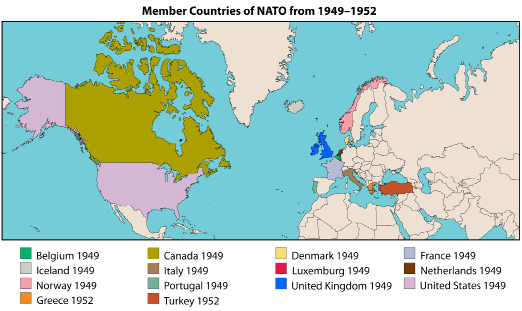

Have you ever heard of the game Chicken? A few decades ago, risk-loving young people played this very dangerous game by driving at top speed in the same lane toward each other. The winner of the game was the driver who did not swerve out of the way to avoid a collision. The loser, or the driver who swerved out of the way, was called the chicken. The two drivers would bring each other to the brink of collision or death. Those who engaged in the game thought the life-or-death risk was fun and exciting.
What would happen if countries decided to play Chicken using nuclear bombs instead of cars? Would that be amusing and exciting?
In this lesson, you will discover how nations used nuclear weapons in a political game of Chicken. In military terms, the game of Chicken would be called brinkmanship. Several times in history, the American and Soviet superpowers brought the world to the brink of war. It was thought that if one side launched nuclear weapons, the other would retaliate with nuclear weapons, and the resulting war would destroy the entire world.
In this lesson, you will explore the following question: How have competing ideologies increased or reduced tensions in international relations?
In the previous lesson, you learned how the two superpowers (the United States and the Soviet Union) attempted to gain control of Europe and other parts of the world. Soviet expansionism created fear in European and Asian democratic nations. No one wanted another war, and Soviet expansionism was on everyone’s mind.
How could lasting peace be created in Europe? How could the nations use deterrence to prevent another country from taking military action? The Americans felt it necessary to contain the Soviets. They would try to limit Soviet expansionism through the use of the Marshall Plan and the Truman Doctrine by offering political and economic aid to countries that opposed Soviet expansionism.
Deterrence is a method of cold war, rather than a method of hot war. Deterrence involves the building up of one's capacity to fight such that neither opponent will fight because of the expected outcomes.
The world knew that a hot war between superpowers would mean a nuclear war that would destroy not only the opponents by the entire planet.
MAD deters each side from entering into direct conflict. Weapons of mass destruction have been key issues in more recent conflicts.
The impact of the Cold War was far-reaching, encompassing the political, economic, scientific, social, environmental, and even psychological realms. The superpowers involved themselves in numerous smaller conflicts around the world by providing arms, and sometimes troops, to assist allies in their spheres of influence. This was often costly—both financially and in terms of human lives.
The superpowers also devoted much of their gross national products to the expansion and maintenance of both conventional and nuclear arsenals. Beyond the financial cost, testing associated with nuclear weapons programs scattered radioactive fallout over much of the world. Citizens of both the Western and Soviet Bloc nations had to live with the knowledge that nuclear Armageddon was a real and continuing threat.
The governments on both sides produced propaganda, misinformation, the threat of World War III, mania, and paranoia grew. The Soviet people experienced less hysteria due to the recent and historical experiences with war whereas Americans were especially on edge due to their inexperience of conflict at home. The Red Scare led to fallout shelters being built, 'duck and cover' drills being practiced in schools, etc.
Espionage was a key tool on both sides to advance their policies of expansionism and containment. For example, when a spy plane photographed Soviet missiles being installed on Cuban soil it only fueled the paranoia and mistrust. But this type of intelligence kept the world from the brink of war.
Jewish Americans, Julius and Ethel Rosenberg were tried and convicted of espionage against the American government for delivering secret information to the Soviets about American military weaponry. Similarly, American pilot, Gary Powers' U-2 Spy Plane was shot down over Soviet territory and he was captured.
in 1950, Joseph McCarthy, an ex-marine and Republican Senator, charged that several communist supporters were among those working for the State Department. His accusations prompted a hearing to investigate the matter. McCarthy and his committee held hearings to investigate Hollywood and the American film industry, after which they 'blacklisted' many people who were uncooperative or unwilling to testify.
Ultimately, McCarthy's charges were unfounded, but he continued to assert that communism had infiltrated the Democratic Government and used his accusations to support Republican candidates during the Senate election.
Countries in orange are members of NATO, and countries in red are members of the Warsaw Pact.
Communist and democratic ideologies were divided along the lines of the Iron Curtain—the imaginary line separating communist and non-communist countries. In 1949, Soviet expansion motivated democratic countries to group in a military alliance called NATO (North Atlantic Treaty Organization).
Through NATO, democratic European countries, Canada, and the United States allied against communist countries. This was a form of collective security. If one country belonging to NATO were threatened or attacked, all other member countries would come to its defense. The founding members of NATO hoped to discourage communist countries from attempting to expand their spheres of influence into democratic countries.

The Soviet Union was not going to be intimidated by the United States and the new sphere of influence created by member countries of NATO. The Soviet Union and its satellite states created their organization based on collective security.
In 1955, the Warsaw Pact was created as a reaction to the NATO alliance. The formal title of the Warsaw Pact was “Treaty of Friendship, Co-operation, and Mutual Assistance.” The Warsaw Pact became inactive in 1991.
It seemed that mutual deterrence was becoming an important military strategy. One big problem remained; by 1945, the United States was the only country to possess an atomic bomb. The United States tested the bomb’s power when the country dropped atomic bombs on Hiroshima and Nagasaki to end the fighting against the Japanese at the end of World War II.
The United States was the only country with the technology to develop an atomic bomb. The Americans could, in theory, decide to drop bombs everywhere, and no country would be able to stop them from taking over the world. As a result, other countries were afraid to oppose the United States. For a time, the United States became the only true world superpower.
The pressure was on the Soviets to develop a bomb. In 1951, the Soviet Union became a nuclear power and the arms race was on. The arms race led to a fear of mutually assured destruction (MAD).
If one country dropped a bomb on another country, that country would retaliate and drop a bomb on the attacker. Having seen the effects of nuclear bombs in Japan, it was certain that both countries involved, and neighbouring countries, would feel the devastating effects of a war fought with nuclear weapons.
The table shown lists how many nuclear weapons were held, by country, from 1945–1990. As you examine the table, consider how many bombs each country possessed. If each bomb had the potential to kill hundreds of thousands of people, what impact would this distribution of weapons have around the globe?
| End Year | United States | Soviet Union | United Kingdom | France | China | Total |
|---|---|---|---|---|---|---|
| 1945 | 6 | -- | -- | -- | -- | 6 |
| 1948 | 110 | -- | -- | -- | -- | 110 |
| 1951 | 640 | 25 | -- | -- | -- | 665 |
| 1954 | 2063 | 150 | 5 | -- | -- | 2218 |
| 1957 | 6444 | 660 | 20 | -- | -- | 7124 |
| 1960 | 20 434 | 1605 | 30 | -- | -- | 22 069 |
| 1984 | 23 228 | 37 431 | 270 | 280 | 415 | 61 623 |
| 1987 | 23 490 | 38 859 | 300 | 420 | 415 | 63 484 |
| 1990 | 21 211 | 33 417 | 300 | 505 | 430 | 55 863 |
Other countries came to possess nuclear weapons, including India, Pakistan, and North Korea. These countries were not nuclear powers during the Cold War, but they have become nuclear powers in modern times.
Deterrence, through the use of collective security and an arms race, did not bring about world peace. The fear of a nuclear attack was real. What would happen if one country did decide to push the button and launch a nuclear weapon at another country? At one point there was enough nuclear power to blow up the world seven and a half times. Was this necessary?
Countries trained their citizens to protect themselves in the event of a nuclear attack. Underground bunkers were built, and many households stored food supplies to last for weeks. Sirens were installed in many communities and people practiced going to the nearest shelter.
You may have watched the film Duck and Cover, earlier in this course. This film was shown in schools all over the United States.
Would the nuclear powers ever really use their nuclear weapons in an attack against another country? In 1962, the world was about to test this idea.
In October 1962, the world was on the brink of experiencing another world war. The Soviet leaders were very concerned because the Americans had established missile launch sites in Turkey, a country located very close to the Soviet Union.
To Soviet leaders, these missile sites upset the balance of power in favour of the United States and NATO. The Soviet Union did not have the same ability to strike the United States from such a close distance. The Soviet Union decided to take action and the nation found an ally in the American sphere of influence—Cuba.
The American government was convinced that Cuba, led by Fidel Castro, was communist. The United States was not comfortable with a communist country being so close.
Are you familiar with Cuba’s geography? See this map of Cuba to help you follow the events.
In 1959, the United States led an unsuccessful attempt to attack Cuba at the Bay of Pigs. Nikita Khrushchev; the Soviet leader, and Fidel Castro; the Cuban leader, used this incident to organize the placement of nuclear weapons in Cuba—within the American sphere of influence. The Americans believed that a communist Cuba would upset the balance of power (and the American advantage) between the two superpowers.
By 1962, the Americans had more missiles than the Soviet Union. Khrushchev and Castro decided to place intermediate-range missiles in Cuba. They wanted the missiles to act as a deterrent to the United States.
If the Soviet Union could strike the United States, then the United States would be less motivated to attack the Soviet Union. Countries do not normally attack each other when they are at even strength.
On October 15, 1962, the crew of an American spy plane flying over Cuba spotted missile launch pads being built in Cuba. U.S. President John F. Kennedy decided to place a naval blockade around Cuba.
Kennedy wanted to stop any further materials from arriving in Cuba. He also said that if any missiles were launched from Cuba, he would take that as an attack from the Soviet Union and he would declare war on the Soviet Union. Kennedy demanded that all weapons be removed from Cuba.
Kennedy and Khrushchev were both set to achieve their goals using brinkmanship—they were pushing a dangerous situation to the limit. The American government would not tolerate nuclear missiles in its sphere of influence. At the same time, it was important to Khrushchev to have some form of nuclear presence in the American sphere of influence. Kennedy’s military and naval presence around Cuba created a situation neither country expected.
Soviet weapons were arriving in Cuba by ship. The Americans had to stop Soviet weapons from arriving in Cuba. However, if the United States acted aggressively against the ships, the Soviet Union would retaliate. If the Soviet Union continued to send supplies to Cuba, the United States would feel obligated to act.
The president of the United States spoke to the Americans about the situation they were facing. The possibility that a world war would occur was increasing at an alarming rate.
For 13 days, as both countries negotiated a settlement, many people in the world wondered whether they were on the verge of another war. Soviet ships, filled with supplies, lined up along an imaginary line at sea. If any ship crossed that line, the Americans would take it as an act of war and would react.
An agreement seemed impossible. If the Soviet Union turned its ships around, the country would seem weak and powerless. If the United States allowed the Soviet Union to place missiles in Cuba, that nation would appear weak and would have the continuous fear of a Soviet nuclear presence in its backyard.
In October 1962, the two leaders reached an agreement. The United States would remove its missiles from Turkey. The Soviet Union would remove its launch pads from Cuba. The Cuban Missile Crisis was over.
Arms race: competition among nuclear countries to determine which country would possess the most nuclear weapons
Brinkmanship: the practice, especially in international politics, of seeking advantage by creating the impression that one is willing and able to push a highly dangerous situation to the limit rather than concede
Collective security: an organization of countries that agree to protect one another if any of the member countries are attacked
Détente: a period of lessening tensions
Deterrence: a foreign policy to discourage a country from taking military action
Dissuasion: The French policy of maintaining a nuclear arsenal for national defense
McCarthyism: the term given to the movement to root out and expose potential communists within American society during the mid-1950s
Mutual deterrence: occurs when two or more countries use all possible means to prevent one another from taking military action
Mutually assured destruction (MAD): fear that if one country used a nuclear bomb to attack another country, there would be a nuclear war that would destroy the world
NATO: the North Atlantic Treaty Organization is an intergovernmental military alliance
Naval blockade: occurs when ships from one country stop the passage of ships from another country
Satellite state: a small country that borders another country and is under the influence or control of the neighbouring country
In this lesson, you explored the following question: How have competing ideologies increased or reduced tensions in international relations?
The ideological conflict between communism and democracy was not limited to Europe. The end of World War II introduced a new era—the era of nuclear weapons and nuclear confrontation.
In the conflict between the United States and the Soviet Union, neither country was willing to drop a nuclear weapon on the other, because that act would ultimately result in destruction and loss of lives. Countries formed alliances and raced to build as many weapons as needed to keep the balance of power.
Deterrence may have prevented an attack or nuclear destruction, but the people continued to fear that war was inevitable. World tensions escalated during this time. The world realized that new political strategies were needed.
The world came too close to the brink of destruction by nuclear war. In the end, tensions were reduced as the leaders with conflicting ideologies—President Kennedy and Premier Khrushchev—began to build some bridges and communicate to try to prevent another confrontation like the Cuban Missile Crisis. Even a direct phone link between Soviet and American leaders—the Hot Line—was established. No longer should the world feel the threat of an imminent war.
Use the Internet to develop a greater understanding of the impacts the Cold War had on nations, their populations, and the world.
Download and complete the Impacts of the Cold War by using an Internet search engine to collect the requested pieces of information.
Spend enough time reading about each item to get a sense of how the item relates to the Cold War. Think about the significance of the item. Then, in the appropriate column, record your insight about how the item demonstrates the impact the Cold War had on the nations involved, their citizens, or the world in general. Finally, rate the item’s impact as positive, neutral, or negative; and briefly explain your reasoning.